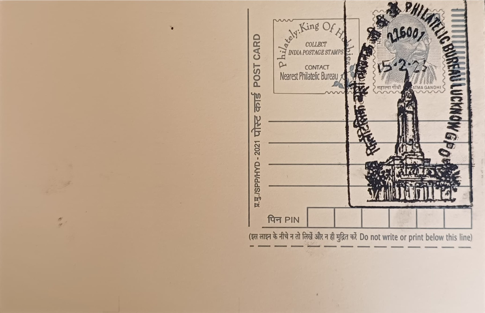

Lucknow GPO Clock Tower
लखनऊ जीपीओ घंटाघर


The building that now houses the Lucknow General Post Office occupies a site in Hazratganj whose character was reshaped after the 1857 uprising, when the British remodelled the old Nawabi marketplace along the lines of a colonial thoroughfare, complete with uniform facades, stone pavements and tree-lined walkways; the area was for a time restricted to European residents and known as Queen's Way. Local accounts place an earlier structure on or near the site in civic and recreational use before it was adapted for postal administration, and the post office's move into its present Hazratganj premises is generally dated to the early twentieth century, as Lucknow's postal apparatus was consolidated to serve the growing provincial capital.
As the General Post Office of Lucknow, the building functions as the apex postal institution for the city and, historically, for the wider Awadh region, combining administrative, operational and philatelic roles under one roof. Its clock tower, visible along Vidhan Sabha Marg, has become one of the informal landmarks by which the Hazratganj commercial district is navigated, standing alongside the area's other colonial-era clock towers as a marker of the street's transition from Nawabi bazaar to administered British thoroughfare. The GPO's significance was given formal recognition when it was depicted on a postage stamp in the Architectural Heritage Buildings of Indian Post Offices series, issued on 13 May 2010 ahead of the INDIPEX 2011 World Philatelic Exhibition.
The structure follows the idiom common to major General Post Offices built across British India in the late nineteenth and early twentieth centuries, employing red brick detailing, arched window openings and a multi-storey tower block rising above the main facade to house a four-faced public clock. This combination of utilitarian postal hall and ornamental clock tower was a deliberate device used by colonial public works departments, allowing a working government building to also serve as a timekeeping landmark visible across a commercial street. Accounts of the exact construction date and original architect vary across local sources, but the building's scale and detailing place it firmly within the GPO-building programme that produced comparable head post offices in other provincial capitals of the period.
A distinguishing feature of the Lucknow GPO is its continued use of the clock tower as a functioning timepiece rather than a purely decorative element, kept running through successive maintenance cycles even as much of the surrounding Hazratganj streetscape has been rebuilt or commercially redeveloped. The building has also been associated in local memory with the dramatic legal history of the area, including the proximity of its site to locations used for special tribunals connected to revolutionary activity against British rule in the 1920s, a period that left Hazratganj with a reputation extending beyond its role as a shopping district. This layering of administrative, judicial and commercial memory around the same stretch of Vidhan Sabha Marg has made the GPO one of the more frequently cited heritage buildings in popular accounts of the area.
Today the Lucknow GPO-PB continues to operate as a full-service head post office under India Post's Uttar Pradesh circle, handling mail processing, savings bank services and philatelic sales, including the counter from which special covers and commemorative stamps tied to Lucknow events are typically released. The clock tower building is routinely listed among Hazratganj's notable heritage structures in municipal and tourism material documenting the area's Nawabi-to-colonial architectural transition. For collectors of postal pictorial cancellations, the GPO's cancellation mark, keyed to the 226001 pin code, remains one of the more recognisable Lucknow postmarks still in regular use.
| Date of Introduction | October 13, 1998 |
|---|---|
| Address | Incharge, |
| Philatelic Bureau, Lucknow GPO-PB, | |
| Lucknow (dt.), Uttar Pradesh - 226001. |